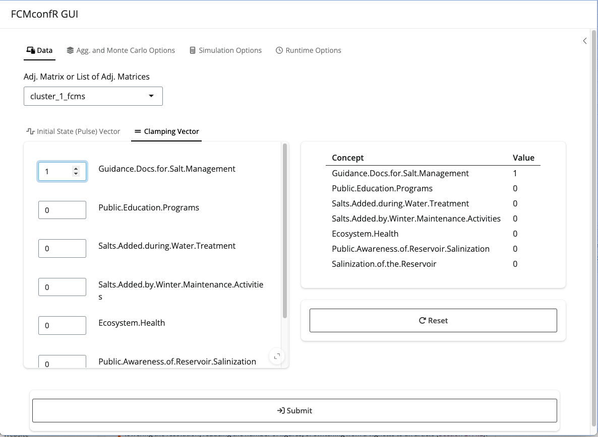

fcmconfr streamlines the process of conducting dynamic simulations using Fuzzy Cognitive Maps (FCMs). The package supports multiple FCM types (conventional, Interval-Value Fuzzy Number (IVFN) and Triangular Fuzzy Number (TFN)) and provides tools for model aggregation and the propagation of uncertainty from individual FCMs through to the aggregate.
fcmconfr includes a variety of supporting functions that make working with FCMs easier, including functions for creating IVFN and TFN adjacency matrices from standard .xlsx and .csv files, functions for stramlining parameter selection to facilitate model convergence, and functions for visualizing FCM networks and simulation outputs. The package was developed with a strong focus on accessibility (ease-of-use) and features both an interactive GUI and standard function commands.
Installation
Users can install the development version of fcmconfr from GitHub with:
# install.packages("pak")
pak::pak("bhroston/fcmconfr")
# Or
remotes::install_github("bhroston/fcmconfr")Example
A typical fcmconfr workflow includes the following four steps:
Import FCMs
Set simulation parameters using
fcmconfr_gui()Run simulations using
fcmconfr()Explore outputs using
get_inferences()andplot()
See vignette("fcmconfr", package = "fcmconfr") for a detailed description of each step.
1. Import FCMs
FCMs are matrix objects that can be imported into R using readxl::read_excel() and read.csv(). The best approach for importing an FCM into R depends on the type of FCM being imported.
See vignette("Importing_FCMs", package = "fcmconfr") for a detailed guide on importing different FCM types, including conventional FCMs, FCMs with edge weights represented as IVFNs (IVFN-FCMs), and FCMs with edge weights represented as TFNs (TFN-FCMs).
2. Set Simulation Parameters using fcmconfr_gui()
fcmconfr() is the central function of the package and requires specifying many parameters. To guide users through that process, the package procides an easy to use GUI that can be accessed by fcmconfr_gui().

Calling fcmconfr_gui() launches a Shiny app that lets users interactively select parameters and outputs a corresponding call to fcmconfr() that users can copy-and-paste to run in their own scripts.
A brief summary of each parameter within the fcmconfr_gui() is provided in a glossary stored in a side tab within the GUI. The side tab can be opened by clicking the arrow symbol in the top-right-hand-corner of the GUI.
3. Run Simulations using fcmconfr()
To run fcmconfr(), execute the output script created by `fcmconfr_gui(). The following call uses an example FCM from the sample_fcms data included in the package.
# This call to fcmconfr() was generated from fcmconfr_gui()!
# Store the output in a variable to explore it later
fcmconfr_obj <- fcmconfr(
adj_matrices = sample_fcms$simple_fcms$conventional_fcms,
# Aggregation and Monte Carlo Sampling
agg_function = 'mean',
num_mc_fcms = 1000,
# Simulation
initial_state_vector = c(1, 1, 1, 1, 1, 1, 1),
clamping_vector = c(1, 0, 0, 0, 0, 0, 0),
activation = 'rescale',
squashing = 'sigmoid',
lambda = 1,
point_of_inference = 'final',
max_iter = 100,
min_error = 1e-05,
# Inference Estimation (bootstrap)
ci_centering_function = 'mean',
confidence_interval = 0.95,
num_ci_bootstraps = 1000,
# Runtime Options
show_progress = TRUE,
parallel = TRUE,
n_cores = 2,
# Additional Options
run_agg_calcs = TRUE,
run_mc_calcs = TRUE,
run_ci_calcs = TRUE,
include_zeroes_in_sampling = FALSE,
include_sims_in_output = FALSE
)4. Explore fcmconfr() Results
fcmconfr() generates a large object with many concepts, the most important of which are simulation inferences (individual, aggregate, Monte Carlo). Inferences indicate how much each node in an FCM is influenced by a particular change or action. The get_inferences() function gives users access to that data without having to interact with the fcmconfr() object directly.
fcmconfr_inferences <- get_inferences(fcmconfr_obj)A plot of all inferences can be generated using plot(). Documentation for plot() can be accessed via ?plot.fcmconfr (?plot returns the documentation for the Base R version of the function).
plot(fcmconfr_obj)
Related Packages
- MentalModeler is a web-based platform to build FCMs with features for “what-if” analysis.
-
fcmis an R package that includes functions for simulating individual conventional FCMs. -
InCognitiveis a Python package that for simulating conventional FCMs with lambda optimization and Monte Carlo analysis. -
FCMpyis a Python package that supports translation of linguistic terms to quantitative edge weights, FCM simulation and genetic learning algorithms. -
PyFCMis a Python package that includes functions for FCM simulation and aggregation. -
jFCMis a java-based suite of functions to simulate FCMs.
Contributing
Please note that this package is released with a Contributor Code of Conduct. By contributing to this project, you agree to abide by its terms.
If you think you have encountered a bug, please submit an issue.
Please include a reprex (a minimal, reproducible example) to clearly communicate about your code.